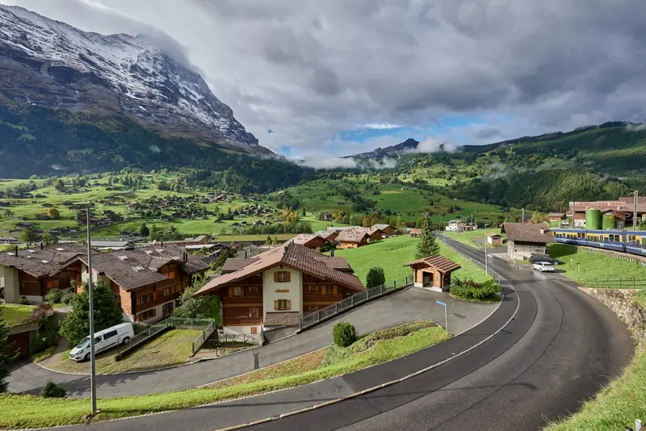

Vermieten · 6 Min. Lesezeit
Ferienwohnung in Grindelwald vermieten: Auslastung, Preise und Gäste in Zahlen
Eine Ferienwohnung in Grindelwald ist im Schnitt an 72 % aller Nächte gebucht, zu durchschnittlich CHF 296 pro Nacht. Das ist deutlich mehr als im Schweizer Schnitt. Doch zwischen guten und schwachen Wohnungen liegen Welten. Hier sind die Zahlen, die für Eigentümer zählen.

Chalets und Wohnhäuser in Grindelwald, links der Eiger. In Grindelwald sind rund 570 Unterkünfte auf Airbnb inseriert.
- Airbnb-Wohnungen in Grindelwald sind im Schnitt zu 72 % ausgelastet, der Schweizer Schnitt liegt bei 59 %.
- Der durchschnittliche Nachtpreis beträgt CHF 296, die Hälfte der Inserate verlangt weniger als CHF 206.
- Ferienwohnungen in Grindelwald zählten 2025 rund 372'000 einzeln gemeldete Logiernächte, 58 % mehr als 2021.
- Fast zwei Drittel der Gäste kommen aus dem Ausland, in Ferienwohnungen vor allem aus Korea, den USA, Deutschland und Grossbritannien.
Die Marktzahlen auf einen Blick
Die Zahlen gelten für alle aktiven Airbnb-Inserate in Grindelwald über zwölf Monate, von November 2025 bis Oktober 2026. Auslastung heisst: Anteil der gebuchten Nächte an allen Nächten, an denen die Wohnung buchbar war.
| Kennzahl | Grindelwald | Schweiz |
|---|---|---|
| Aktive Inserate | 570 | – |
| Auslastung im Durchschnitt | 72 % | 59 % |
| Nachtpreis im Durchschnitt | CHF 296 | CHF 199 |
| Umsatz pro Jahr im Durchschnitt | CHF 77'548 | – |
Grindelwald gehört damit zu den am besten gebuchten Orten der Schweiz. Im Vergleich von 23 Schweizer Orten liegt nur die Stadt Luzern höher. Am stärksten gebucht sind die Monate Juni und August, am schwächsten November und März.
Gute und schwache Wohnungen im Vergleich
Der Durchschnitt verdeckt grosse Unterschiede. Grosse Chalets mit hohen Preisen ziehen ihn nach oben. Aussagekräftiger ist der Median, also der Wert genau in der Mitte: Die Hälfte der Wohnungen liegt darüber, die andere Hälfte darunter.
| Gruppe | Auslastung | Nachtpreis | Umsatz pro Jahr |
|---|---|---|---|
| Beste 10 % | 94 % | CHF 472 | CHF 107'668 |
| Beste 25 % | 81 % | CHF 312 | CHF 68'762 |
| Median | 62 % | CHF 206 | – |
| Schwächste 25 % | 38 % | CHF 116 | CHF 19'563 |
Die Werte jeder Spalte sind einzeln ermittelt. Eine Wohnung mit 94 % Auslastung hat also nicht automatisch auch einen Nachtpreis von CHF 472. Klar ist trotzdem: Zwischen dem schwächsten und dem besten Viertel liegt mehr als das Dreifache an Umsatz. Neben Lage und Grösse spielen Fotos, Preise, Bewertungen und schnelle Antworten eine Rolle.
Rechenbeispiel: Was 10 Prozentpunkte Auslastung ausmachen
Beispiel mit einer Wohnung zum Median-Preis von CHF 206 pro Nacht:
| Median 62 % | Durchschnitt 72 % | |
|---|---|---|
| Gebuchte Nächte pro Jahr | 226 | 263 |
| Nachtpreis | CHF 206 | CHF 206 |
| Umsatz pro Jahr | CHF 46'556 | CHF 54'178 |
37 Nächte mehr bringen beim gleichen Preis rund CHF 7'600 mehr Umsatz im Jahr. Davon gehen noch Plattformgebühr, Reinigung und allenfalls die Verwaltung ab. Wie viel am Schluss bleibt, zeigt der Artikel Was bringt eine Ferienwohnung ein. Für Ihre eigene Wohnung rechnet der Ertragsrechner mit den Zahlen von Grindelwald.
Logiernächte: Ferienwohnungen wachsen langfristig
Grindelwald Tourismus zählt jede Übernachtung im Dorf. 2025 war mit 1'587'509 Logiernächten das drittbeste Jahr der Geschichte, nach den Rekordjahren 2023 und 2024. Die Ferienwohnungen haben seit 2021 stark zugelegt.
| Jahr | Hotels | Ferienwohnungen* | Total Grindelwald |
|---|---|---|---|
| 2021 | 451'959 | 236'008 | 1'105'546 |
| 2022 | 651'411 | 331'485 | 1'415'607 |
| 2023 | 802'790 | 360'994 | 1'616'580 |
| 2024 | 789'418 | 378'444 | 1'615'374 |
| 2025 | 766'031 | 372'469 | 1'587'509 |
* Nur einzeln gemeldete Übernachtungen in Ferienwohnungen. Wohnungen mit Pauschale sind nicht dabei, im Total aber schon. Das Total enthält auch Berghotels, Herbergen und Camping.
2025 gingen die Hotels um 3 % zurück, die Ferienwohnungen nur um 1,6 %. Schweizweit stiegen die Logiernächte in Ferienwohnungen 2025 um 4,3 % auf 7,4 Millionen. Ein Aufenthalt in einer Ferienwohnung dauert im Schweizer Schnitt 5,9 Nächte.
Woher die Gäste kommen
Über alle Unterkünfte stammen 35 % der Logiernächte in Grindelwald aus der Schweiz, 23 % aus Asien, 22 % aus dem übrigen Europa, 14 % aus Amerika und 6 % aus den Golfstaaten, Afrika und Ozeanien. In den Ferienwohnungen sieht die Spitze so aus:
| Herkunft | Logiernächte 2025 | Veränderung zu 2024 |
|---|---|---|
| Schweiz und Liechtenstein | 71'064 | −25,2 % |
| Korea | 55'086 | −3,7 % |
| USA und Kanada | 54'907 | +15,4 % |
| Deutschland | 39'221 | −6,2 % |
| Grossbritannien und Irland | 23'117 | +22,5 % |
Für Eigentümer heisst das: Das Inserat muss auf Englisch überzeugen, die Hausregeln und die Anreise-Nachricht ebenso. Viele Gäste reisen von weit her an, kommen spät abends mit der Bahn und kennen weder Schnee noch Schweizer Waschmaschinen.
Checkliste: So holen Sie in Grindelwald mehr heraus
- Preise nach Saison: Im Juni und August höher, im November und März tiefer. Ein fester Preis übers ganze Jahr verschenkt Geld in der Hochsaison und Nächte in der Nebensaison.
- Inserat auf Englisch: Titel, Beschreibung und Fotos für internationale Gäste schreiben, mit Bahnhof, Bahnen und Aussicht auf den Eiger.
- Anreise ohne Wartezeit: Viele Gäste kommen spät an. Ein Self-Check-in mit Schlüsselbox oder Smart Lock erspart Ihnen Abende am Telefon.
- Winter vorbereiten: Platz für Skis, ein Ort für nasse Schuhe und eine Heizung, die sich aus der Ferne steuern lässt. Mehr dazu im Artikel Ferienwohnung im Winter vermieten.
- Kalender offen halten: Wer viele Wochen selbst blockiert, fällt in die Gruppe mit tiefer Auslastung. Eigene Ferien früh eintragen, am besten in der Nebensaison.
Rechtliche Fragen wie das Zweitwohnungsgesetz, die Regeln und Bewilligungen oder die Kurtaxe behandeln wir in eigenen Artikeln.
Wie Alpinhost hilft
Wir wohnen in Grindelwald und vermieten Ferienwohnungen auf Airbnb und Booking.com: Inserat, Preise nach Saison, Gäste, Reinigung und Abrechnung. Wie viel Ihre Wohnung einbringen kann, sehen Sie im Ertragsrechner. Für eine Einschätzung mit Vergleichswohnungen aus Ihrer Nachbarschaft schreiben Sie uns.
Häufige Fragen
Wie gut sind Ferienwohnungen in Grindelwald gebucht?
Airbnb-Wohnungen in Grindelwald sind im Schnitt an 72 % der buchbaren Nächte belegt (November 2025 bis Oktober 2026). Die Hälfte der Wohnungen liegt unter 62 %, das beste Viertel über 81 %.
Wie viel kostet eine Nacht in einer Ferienwohnung in Grindelwald?
Im Durchschnitt CHF 296. Die Hälfte der Inserate verlangt weniger als CHF 206, das beste Zehntel CHF 472 und mehr. Der Durchschnitt liegt höher, weil grosse Chalets ihn nach oben ziehen.
Wann ist in Grindelwald Hochsaison?
Am stärksten gebucht sind Juni und August. Am schwächsten sind November und März. In diesen Monaten lohnen sich tiefere Preise oder kürzere Mindestaufenthalte.
Woher kommen die Gäste in Grindelwald?
2025 stammten 35 % der Logiernächte aus der Schweiz, 23 % aus Asien, 22 % aus dem übrigen Europa und 14 % aus Amerika. In Ferienwohnungen sind nach den Schweizer Gästen Korea, die USA und Kanada, Deutschland und Grossbritannien am stärksten.
Ihre Wohnung
Was bringt Ihre Ferienwohnung?
Der Rechner nutzt echte Marktdaten von 24 Schweizer Orten.
Ertrag berechnen Wohnung kostenlos prüfen lassenWhatsApp und Telefon: +41 76 275 81 96
E-Mail: info@alpinhost.ch